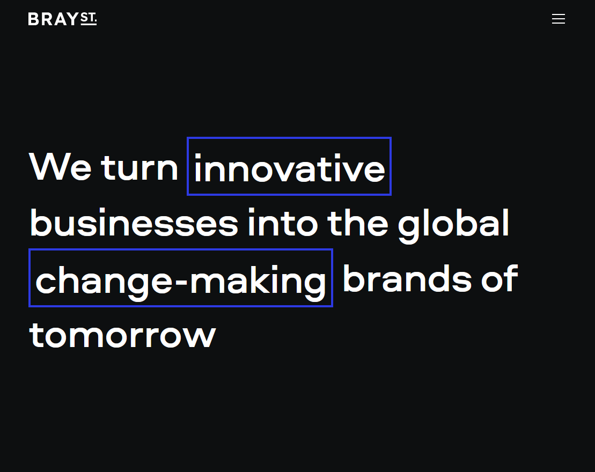
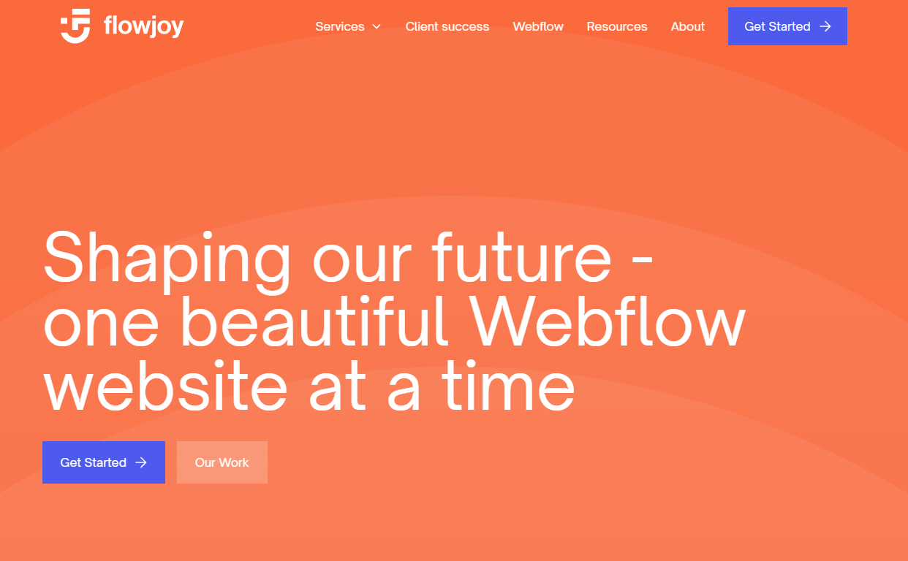
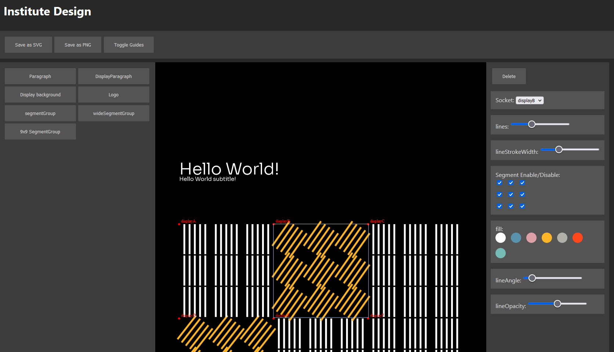
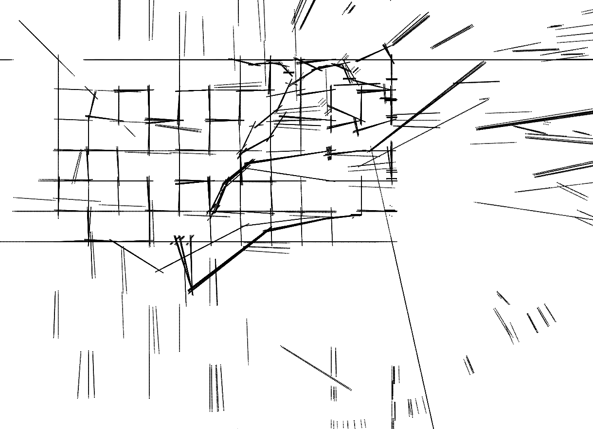

is looking for work as a junior web developer
I'm still working on my full site, so I've made this page for my CV as a placeholder. If you'd like to read this in PDF form, you can download it from here. If you have any other questions, you can contact me here.
Back to top
OCTOBER 2022 - MARCH 2023 | FLOWJOY WEBFLOW AGENCY
Bray St. agency website.
Developed using Webflow, with additional custom functionality added with JS.
Bray St. agency online employee handbook
Built using a framework I developed for rapidly creating simple one-page sites such as employee handbooks or brand guidelines in Webflow.
Flowjoy agency website.
Developed using Webflow, with additional custom functionality added with JS.
MARCH 2022 - SEPTEMBER 2022 | GRAFFIO ARTS
Branded design web app
Created using React and fabric.js, this was a prototype for an application that would allow clients without access to design software to still create media that fit their brand.
Assorted code 'sketches'
A collection of experimental creative coding pieces created using p5.js
In the app, the client's specific brand is broken down into a JSON file containing components such as logos or text in specific styles, and the specific values of that component that could be altered by the user. This allows for some customisation and creation of new content, but without allowing the user to disregard the brand identity created by a designer.
The example on the live site is for generating posters that use a format of a heading and subheadings at the top, then a 9x9 grid that can be filled with specific components.
JULY 2019 - JANUARY 2020 | WITHAM 3RD INTERNAL DRAINAGE BOARD
2013 – 2018 | CAISTOR GRAMMAR SCHOOL
2016 - 2017 | WILD WOODCRAFT
Back to top
Back to top
Back to top
When I'm not behind a keyboard, you can find me shuffling up for a card game, or dressing up as a wizard.